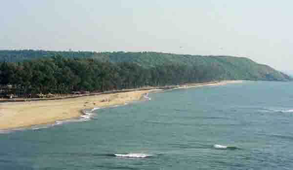
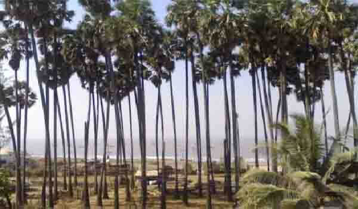

डहाणू हे पालघर जिल्ह्यात वसलेले किनारी शहर आहे. डहाणूमधील मुख्य पर्यटक आकर्षण म्हणजे डहाणू-बोर्डी किनारा. हा प्रसिद्ध किनारा मुंबईपासून १४५ किमी वर आहे. त्याची लांबी १७ किमी आहे. डहाणू-बोर्डी किनारा चिकूसाठी प्रसिद्ध आहे. बोर्डी हे ठिकाण डहाणूपासून अर्ध्या तासावर आहे. उन्हाळ्यात देखील संपूर्ण किनाऱ्यावर थंडगार वारे वाहात असतात.
बोर्डी डहाणूचा नैसर्गिक आणि शांत प्रभाव आणि येथील बीचवरील गडद, काळ्या रंगाच्या वाळूमुळे बरेच पर्यटक आकर्षित होतात. हा समुद्र किनारा बोर्डी येथे आहे - एक लहान गाव, जे विविध शैक्षणिक संस्था आणि बोर्डिंग स्कूलसाठी प्रसिद्ध आहे. येथील समुद्रकिनारा हे मुख्य आकर्षण आहे कारण पर्यटक फिरू शकतात किंवा आराम करण्यासाठी काही वेळ घालवू शकतात.
बोर्डी डहाणू समुद्रकिनारा येथे कॅम्पिंग ग्राउंड उपलब्ध आहे तुम्ही येथे रात्रीची पिकनिक देखील करू शकता. आपण फळ प्रेमी असल्यास आपण येथे उपलब्ध असलेल्या काही सर्वोत्कृष्ट चीकू (सापोडिला) आपल्या आस्वाद घेऊ शकता.
बोर्डी डहाणू किनाऱ्यावर जाण्यासाठी हिवाळ्यातील (नोव्हेंबर ते फेब्रुवारी दरम्यान) योग्य वेळ आहे.